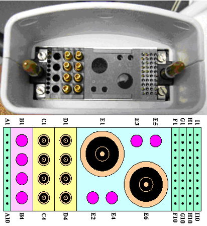
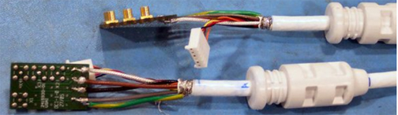

- 00000018WIA3064DE20GYZ
- id_131069472.1
- Jul 1, 2021 1:38:18 PM
3.0T HD 8-Channel Torso Coil Troubleshooting
Personnel Requirements
| Required Persons | Procedure |
| 1 | 30 min |
Overview
The following tips can be used to troubleshoot common problems with the 3.0T HD Torso Array coil.
Preliminary Requirements
Tools and Test Equipment
| Item | Qty | Effectivity | Part # | Manufacturer |
| Digital Volt Meter | 1 | - | - | - |
| 3.0T 8-Channel Torso Phantom | 1 | Legacy and Unified Phantom Set | 2381683-3 | - |
| Torso Phantom Positioner | 1 | Legacy Phantom Set | 2381683-4 | - |
Required Conditions
The following coil configuration names must be installed to run the MCQA tool: GE_HDx TORSOPA
Procedure
Receiving No Signal
Problem:
You are unable to pre-scan or are scanning and yet receiving no signal.
Possible Solution:
-
Verify the green light above the port (Port A, B or C, depends on which port is used to plug in the coil) is illuminated. This indicates the coil is properly plugged into the system.
-
Verify that the Landmark is correct and that the cradle has not unlatched.
-
Perform a continuity check on the output cable (see Section 4.4). The continuity check must be performed by a GE authorized Service Engineer.
-
Verify that the coil is positioned with the cable exiting towards the bore.
-
Verify that the cable is not looped or crossed.
There can also be a problem at the system interface port. Try scanning in both ports. If you still cannot get a signal, try to scan (transmit and receive) with the body coil. For this test, be sure to remove the imaging coil from the magnet bore before you scan with the body coil. If you still receive no signal the problem probably lies with the MR system. If the scan completes successfully, there is probably a problem with the Torso coil. Contact GE for further assistance. If you are unable to scan with the substitute coil, there may be a system problem related to this particular coil type.
Image Quality
Problem:
Poor IQ, shaded images, or if MCQA fails
Possible Solution:
-
Perform a continuity check on the output cable (see Section 4.4). The continuity check must be performed by a GE authorized Service Engineer.
-
Verify that there are no loops in the cables.
-
Verify that there are no metal or ferromagnetic objects (i.e., safety pin, hair pin) close to the coil, patient, or magnet.
-
Verify that the coil is properly positioned.
-
Verify that your center frequency is within the frequency adjustment range for your system.
-
Verify that the R1, R2 and TG values from the pre-scan are within normally expected ranges.
If you have not done so already, perform the coil Quality Assurance test (refer to Operator’s Manual). If the values you obtain do not fall within normal operating parameters, investigate this further by performing a phantom scan with the body coil. For this test, be sure to remove the imaging coil from the magnet bore before you scan with the body coil. If you still have the same problems, there is probably an MR system problem. If the body coil scan is satisfactory, acquire a scan using another coil of the same type (receive-only, phased array). If the image quality is visibly improved, there may be a problem with the Torso coil. Contact GE for further assistance. If the image quality still suffers, there may be a system problem related to imaging with this type of coil.
Artifacts
Problem:
There is a black line or signal void on the image.
Possible Solution:
Verify that there is no metal present in the area being scanned in or on the patient.
Output Cable Check
Visual Check
Before removing the cable assembly from the coil, visually inspect the pin layouts of the coil connector. The connector of the TORSO coil has 2 pins in Column A (A1 and A2), ten pins in Column F (F1-F10), seven pins in Column I (I3, I5-I10), and eight coaxial connectors in Column C and D. See Figure 1. If there are any broken, deformed or recessed pins or coaxial connectors, replace the cable assembly.
Remove the cable assembly from coil, refer to Cable Replacement.
RF Signal Channels Check
The center pins of the System Connector receive coaxial connectors are extremely fragile. Do not attempt to make any measurements at these center pins.

| Channel | Connector Pin | Coil FRU PN | FRU Description | System Cable FRU |
|---|---|---|---|---|
| 1 | C1 | 5498925 (RoHS) or 2418063 (non-RoHS) | GE 3.0T HD Torso Array Coil, Anterior | 2416958 |
| 2 | C2 | |||
| 3 | C3 | |||
| 4 | C4 | |||
| 5 | D1 | 5498926 (RoHS) or 2418064 (non-RoHS) | GE 3.0T HD Torso Array Coil, Posterior | |
| 6 | D2 | |||
| 7 | D3 | |||
| 8 | D4 |

There are two similar cable ends. One is from anterior and one is from posterior part of the coils. Each one has one board with PCX connectors (for RF cables) and DC wires. The procedure is the same for both ends.

The following procedure will rule out a short to GND for each of the signal pins detailed in Table 2. This check does not determine continuity for each of the MC signal connections.
With the coil cable disconnected from the coil, use a multimeter (Set to Continuity) to assure an open circuit condition exists between the designated center pin and GND for each signal channel below. See Figure 2.
| RF GND Shield Coil Side Connector on the PCB | RF Center Pin Coil Side Connector on the PCB | Location on PCB | |
| Anterior | J1 | J1 | X1 |
| J2 | J2 | X2 | |
| J3 | J3 | X3 | |
| J4 | J4 | X4 | |
| Posterior | J1 | J1 | X1 |
| J2 | J2 | X2 | |
| J3 | J3 | X3 | |
| J4 | J4 | X4 |
If one or more of the readings indicate a short, replace the cable. If all of the above readings indicate an open circuit condition, proceed to the DC Lines Continuity Check.
DC Lines Continuity Check
With the coil cable disconnected from the coil, use a multimeter (set to continuity) to determine continuity between the designated pins for each control channel below. If any pair indicates an open in Table 3, replace the output cable.
| System Side Connector Pin | Coil Side DC Wires | |
| Anterior | F1 | Yellow |
| F2 | Red | |
| F3 | Brown | |
| F4 | Orange | |
| Posterior | F5 | Yellow |
| F6 | Red | |
| F7 | Brown | |
| F8 | Orange |
Check for continuity of DC pins in the system connector. If any pair indicates an open in Table 4, replace the output cable
| Pair | System Side Connector Pin | System Side Connector Pin |
| 1 | A1 | A2 |
| 2 | F9 | F10 |
| 3 | I9 | I10 |